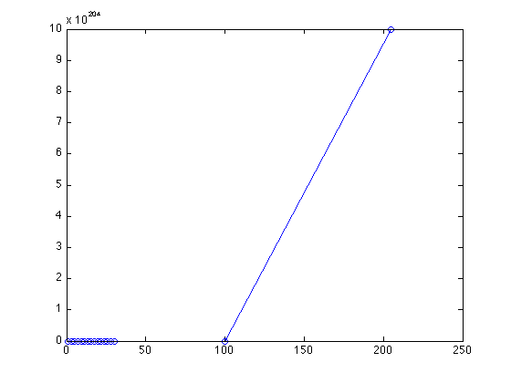
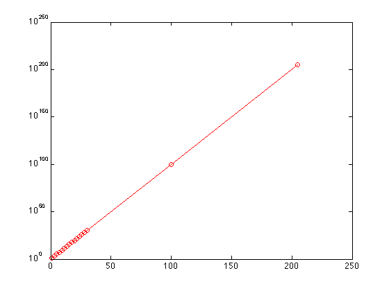
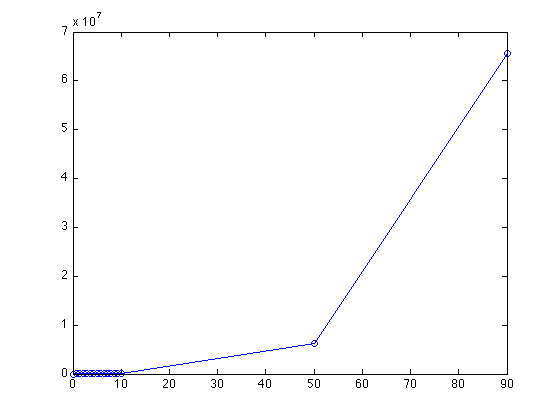
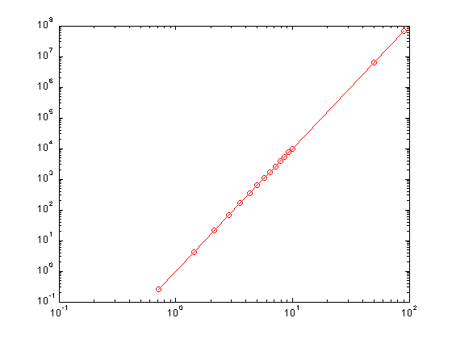
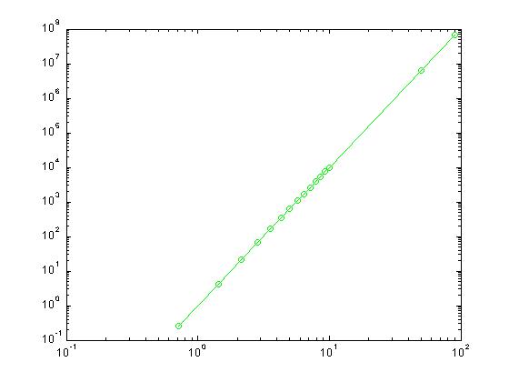

Logarithmic Scaling Information
by Albert Ticona Jr.
Some data sets usually use a form of scaling such that on either or both the x and y axis, an tick x represents C^x, (a =10 is a standard use). This is known as logarithmic scaling. Logarithmic scaling is generally used a lot in the analysis of scientific data, because it helps in reducing power laws and exponential functions into linear forms. For example, if one were fitting data that seemed to follow an exponential pattern, the form of such a curve fit would usually be y = a * b^x, it would be messy to find the parameters of such a function. Example 1 in Matlab:
x = linspace(1, 30, 15);
x = [x 100 205];
plot(x, 10.^x, '-ob')
 It doesn't look very nice since we can not see most of the data. It would be more useful if we changed the scaling in such a way that more of the data can be seen. Observe, if we took the fit of the form y = a*b^x and took the logarithm of both sides then: log(y) = log(a*b^x) => log(y) = log(a) + log(b^x) => log(y) = log(a) + x*log(b). In a semi-logarithmic plot the logarithmic scaling is along the y-axis, where it is most useful in transforming a curve of the form y = a*b^x to a curve of the form, y' = cx + d where y' = log(y). It is also possible to apply the logarithmic scaling along the x-axis, and is more useful when plotting the logarithmic function y = a*log(x) + b.
In Matlab, it possible to create a semi-logarithmic plot by using either of the functions semilogx(), or semilogy(). The input of the functions is in the same format as the plot function, where an input data vector x and its range vector y is required, and specifications can be made to change the format of the line used to connect the data points. Example 1 cont:
semilogy(x, 10.^x, '-or')
 In a log-log plot, both axes are scaled to a logarithmic scale (usually an increment represents 10^x), and is often applied to power laws. It is the same deal as with the semi-log plots. Example2: Suppose I wanted to deal with data that fit on a power law curve x^4:
clf
x = linspace(0, 10, 15);
x = [x 50 90];
plot(x, x.^4, '-ob')
 A bigger problem exists in that for some data points, it is not clear by how much they deviate from a power law fit. In the example above, one way that would help clear up the mess would be to omit the outliers of the set, so as to focus on the cluster of data. However, an even more efficient way would be to change the x and y scale to a logarithmic scale. Notice, the curve fit of a power law would be of the form y = c*x^n where n is some rational number. With log-log scaling, you would apply the logarithm to both sides and get: log(y) = log(c*x^n) => log(y) = log(c) + log(x^n) => log(y) = log(c) + n*log(x). So the log-log scaling of the curve would take a linear form, y1 = b1 + n*x1 where y1 = log(y), x1 = log(x). Example 2 (cont.):
loglog(x,x.^4,'-or');
 Now we can have a clearer view of the majority of the data without omitting the data outliers. This will help us a lot in analyzing our data, but for now you can see that applying a logarithmic scale is an efficient way of making your plots look clearer, and one of the best ways to notice certain trends in the data (in this case, the trend is that the non-logarithmic data follows a power relation y = x^4).
In Matlab, it is possible to set a log-log scaling by using the function loglog(x,y). The function works in the same manner as the plot function, where x is the list of domain values, and y is the list of range values. It is important to mention that in using any of the logarithmic scaling functions, you must have domain/ range values to have all positive values. Remember, the logarithm of a number cannot be expressed if the number is negative or positive. The logarithm of a number returns the power of the base (which in this case is 10) which gives that number, but no power of any base could ever give a negative number or zero. For example, 10^0 = 1 and 10^(-4) = .0001, but I will never find an x such that 10^x = -32. In Matlab, if your x or y vector has negative values, Matlab will print Warning: Negative values ignored and then plot only the positive values. Example 2 (again):
x = [0 x -1 -12];
loglog(x,x.^4,'-og')
